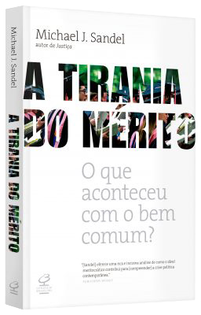
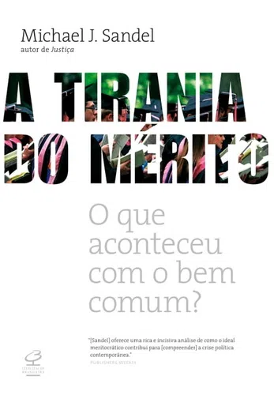
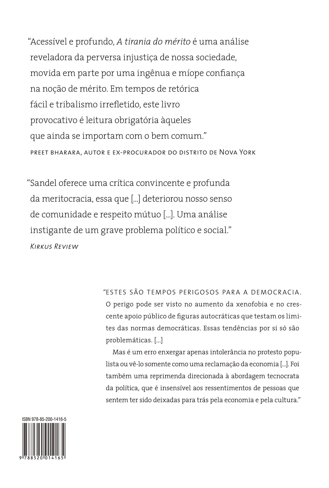

As democracias liberais estão em risco. E, de acordo com o filósofo Michael J. Sandel, o princípio do mérito, um de seus pilares básicos, é o responsável por esse cenário.
Vivemos em uma constante competição, que separa o mundo entre “ganhadores” e “perdedores”, esconde privilégios e vantagens e justifica o status quo por meio de ideias como “quem se esforça tudo pode” e “se você pode sonhar, você pode fazer”. O resultado concreto é um mundo que reforça a desigualdade social e, ao mesmo tempo, culpabiliza as pessoas, o que gera uma onda coletiva de raiva, frustração, populismo, polarização e descrença em relação ao governo e aos demais cidadãos. A resposta pública se manifesta em eventos como as eleições de Donald Trump, nos Estados Unidos em 2016, e de Jair Bolsonaro, no Brasil em 2018.
Ao analisar conceitos em torno da ética do estudo, do trabalho, do sucesso, do fracasso, da tentativa e de quais são os meios considerados legítimos para trilhar esses caminhos, Sandel sugere um novo olhar para essas relações. O autor salienta as contradições do discurso meritocrático, seus contextos estruturais e a arrogância dos “vencedores”, que julgam duramente os “perdedores”.
A tirania do mérito propõe que para existir uma ética diferente e dignificadora, o sucesso deve ser compreendido em prol da coletividade. Indica que uma alternativa de pensamento guiado pela humildade, pela compreensão do papel do acaso na vida humana e pela criação real da oportunidade poderá ser, então, a melhor bússola para a democracia, para o bem comum.
“Estes são tempos perigosos para a democracia. O perigo pode ser visto no aumento da xenofobia e no crescente apoio público de figuras autocráticas que testam os limites das normas democráticas. Essas tendências por si só são problemáticas.
Mas é um erro enxergar apenas intolerância no protesto populista ou vê-lo somente como uma reclamação da economia […]. Foi também uma reprimenda direcionada à abordagem tecnocrata da política, que é insensível aos ressentimentos de pessoas que sentem ter sido deixadas para trás pela economia e pela cultura.”
“Acessível e profundo, A tirania do mérito é uma análise reveladora da perversa injustiça de nossa sociedade, movida em parte por uma ingênua e míope confiança na noção de mérito. Em tempos de retórica fácil e tribalismo irrefletido, este livro provocativo é leitura obrigatória àqueles que ainda se importam com o bem comum.” – Preet Bharara, ex-procurador do distrito de Nova York


